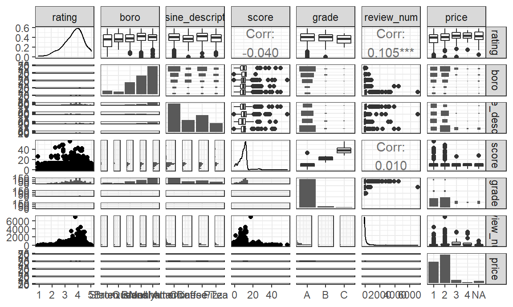
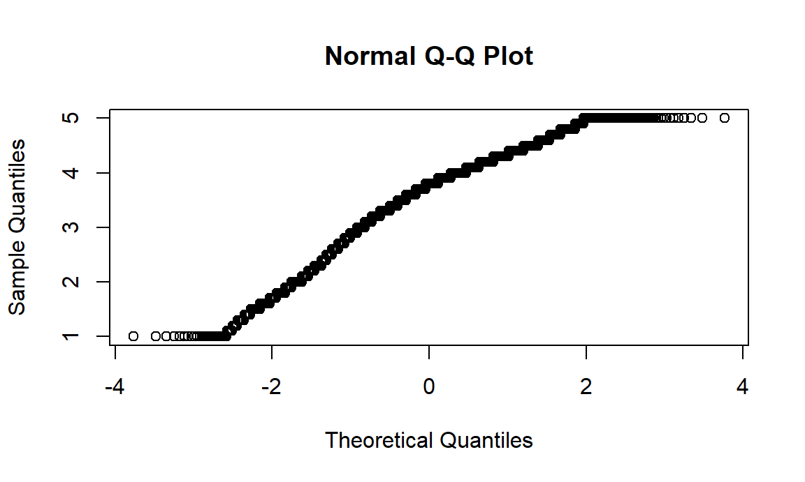
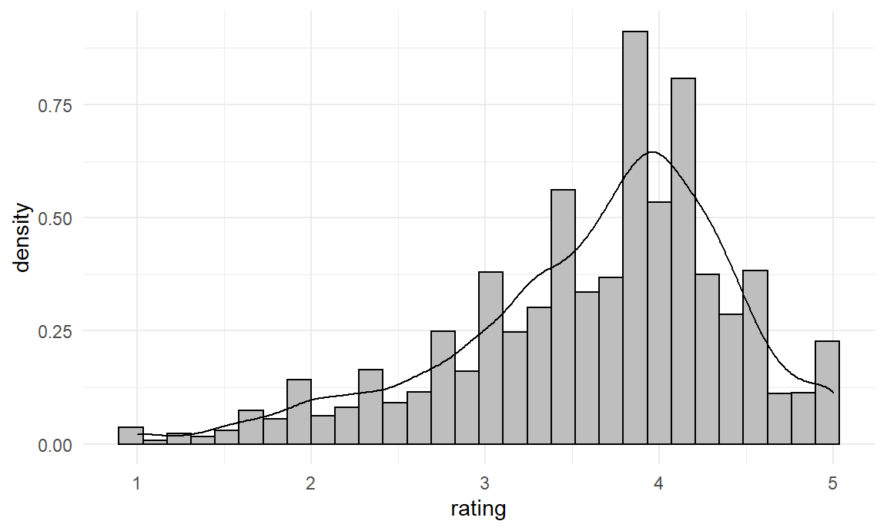
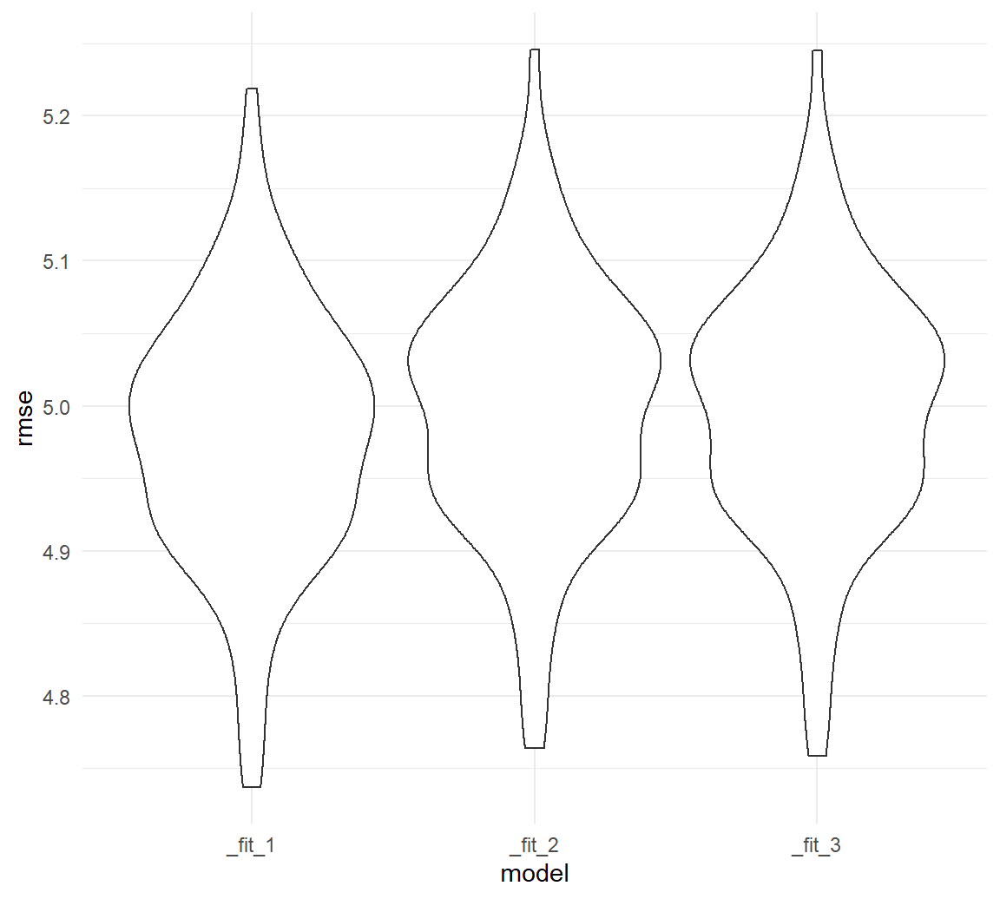
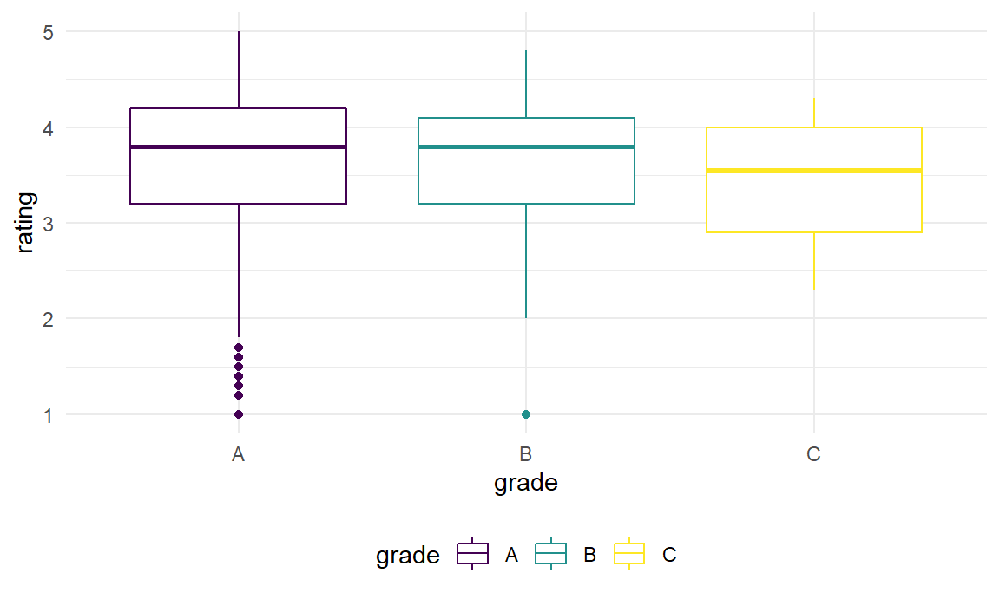
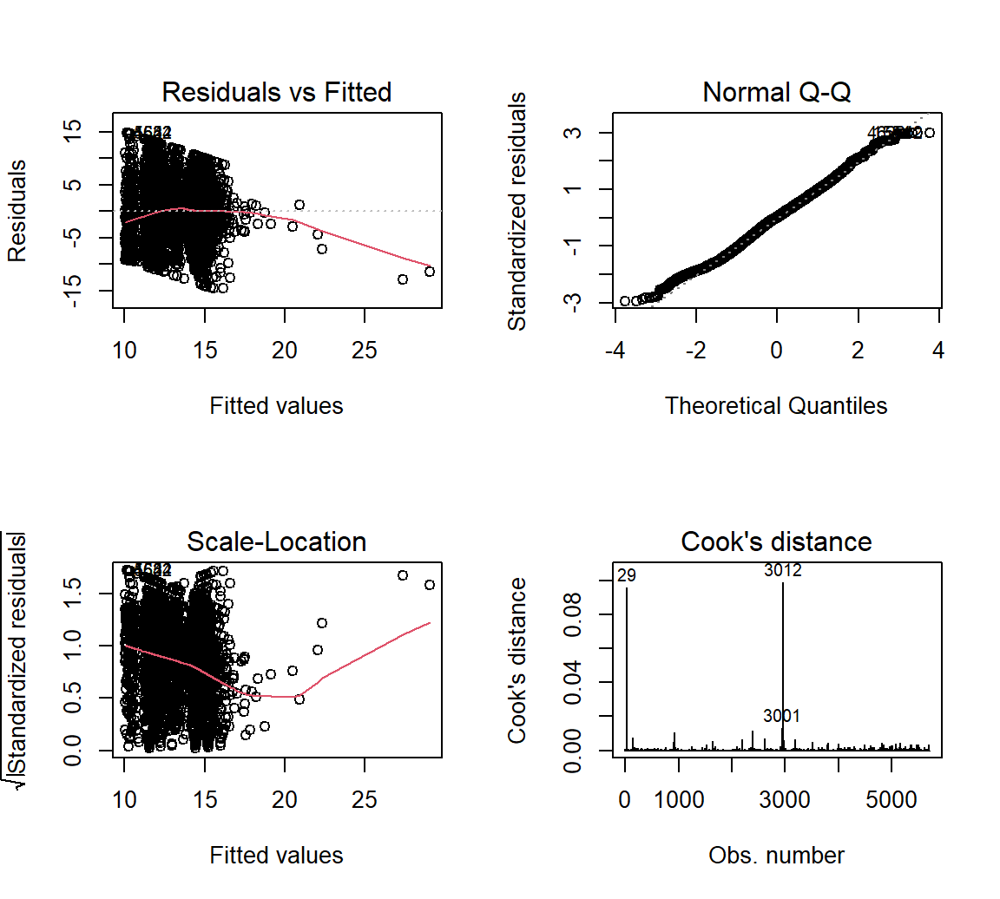

Statistical Analysis
Jiayi Shi
2022-12-09
library(readr)
dt = read_csv("data/inspection_sub_all_date.csv")## Warning: One or more parsing issues, see `problems()` for details## Rows: 54562 Columns: 32
## ── Column specification ────────────────────────────────────────────────────────
## Delimiter: ","
## chr (17): dba, boro, building, street, cuisine_description, action, violati...
## dbl (12): camis, zipcode, phone, score, latitude, longitude, community_boar...
## date (3): inspection_date, grade_date, record_date
##
## ℹ Use `spec()` to retrieve the full column specification for this data.
## ℹ Specify the column types or set `show_col_types = FALSE` to quiet this message.df = read_csv("data/inspection_sub_latest_date.csv") %>%
distinct(dba, .keep_all = TRUE) %>%
mutate(price = fct_recode(price, "1" = "$", "2" = "$$", "3" = "$$$", "4" = "$$$$"),
boro = fct_reorder(boro, rating),
grade = fct_relevel(grade, "A"))## Rows: 20181 Columns: 32
## ── Column specification ────────────────────────────────────────────────────────
## Delimiter: ","
## chr (18): dba, boro, building, street, phone, cuisine_description, grade, i...
## dbl (11): camis, zipcode, score, latitude, longitude, community_board, bin,...
## date (3): inspection_date, grade_date, record_date
##
## ℹ Use `spec()` to retrieve the full column specification for this data.
## ℹ Specify the column types or set `show_col_types = FALSE` to quiet this message.df %>%
select(boro, grade, price) %>%
mutate(boro = fct_infreq(boro)) %>%
tbl_summary(
by = boro,
missing_text = "(Missing)",
statistic = list(
all_categorical() ~ "{n} ({p}%)"
)) %>%
bold_labels() %>%
italicize_levels() | Characteristic | Manhattan, N = 1,9851 | Brooklyn, N = 1,4241 | Queens, N = 1,0871 | Bronx, N = 3311 | Staten Island, N = 1711 |
|---|---|---|---|---|---|
| grade | |||||
| A | 1,002 (69%) | 747 (71%) | 524 (70%) | 137 (66%) | 105 (76%) |
| B | 35 (2.4%) | 35 (3.3%) | 26 (3.5%) | 5 (2.4%) | 1 (0.7%) |
| C | 15 (1.0%) | 8 (0.8%) | 11 (1.5%) | 8 (3.8%) | 0 (0%) |
| N | 195 (13%) | 119 (11%) | 100 (13%) | 36 (17%) | 22 (16%) |
| Z | 210 (14%) | 142 (14%) | 84 (11%) | 22 (11%) | 10 (7.2%) |
| (Missing) | 528 | 373 | 342 | 123 | 33 |
| price | |||||
| 1 | 430 (22%) | 479 (35%) | 380 (37%) | 125 (42%) | 47 (29%) |
| 2 | 1,215 (63%) | 799 (59%) | 604 (59%) | 162 (54%) | 105 (65%) |
| 3 | 235 (12%) | 75 (5.5%) | 34 (3.3%) | 9 (3.0%) | 8 (4.9%) |
| 4 | 49 (2.5%) | 10 (0.7%) | 8 (0.8%) | 2 (0.7%) | 2 (1.2%) |
| (Missing) | 56 | 61 | 61 | 33 | 9 |
| 1 n (%) | |||||
df %>%
select(score,rating, review_num) %>%
tbl_summary(
missing_text = "(Missing)",
statistic = list(
all_continuous() ~ "{mean} ({sd})"
)) %>%
bold_labels() %>%
italicize_levels() | Characteristic | N = 4,9981 |
|---|---|
| score | 18 (14) |
| (Missing) | 100 |
| rating | 3.78 (0.68) |
| review_num | 232 (485) |
| 1 Mean (SD) | |
Chi-square Test
We try to determine whether there is a relationship between boroughs and restaurants’ inspection grades. Our hypothesis is that there is no difference in the number of restaurants across the five grades across the five boroughs in NYC. We will perform the chi-square test to verify our assumption.
\(H0\): the expected number of restaurants in each grades are the same across all boroughs.
\(H1\): the expected number of restaurants in each grades are not same across all boroughs.
grade_boro =
df %>%
drop_na(grade) %>%
count(boro, grade) %>%
pivot_wider(
names_from = "grade",
values_from = "n") %>%
replace(is.na(.), 0) %>%
data.matrix() %>%
subset(select = -c(boro))
rownames(grade_boro) <- c("Bronx", "Staten Island", "Queens", "Brooklyn", "Manhattan")
grade_boro %>%
knitr::kable(caption = "Results Table")| A | B | C | N | Z | |
|---|---|---|---|---|---|
| Bronx | 137 | 5 | 8 | 36 | 22 |
| Staten Island | 105 | 1 | 0 | 22 | 10 |
| Queens | 524 | 26 | 11 | 100 | 84 |
| Brooklyn | 747 | 35 | 8 | 119 | 142 |
| Manhattan | 1002 | 35 | 15 | 195 | 210 |
chisq.test(grade_boro)## Warning in chisq.test(grade_boro): Chi-squared approximation may be incorrect##
## Pearson's Chi-squared test
##
## data: grade_boro
## X-squared = 38.716, df = 16, p-value = 0.001195Interpretation: The result of chi-square shows that p-value is less than 0.05, so we reject the null hypothesis at 95% significant level and conclude that the inspection grades of restaurants are significantly different by boroughs.
price_grade = df %>%
select(boro, score, grade, rating, review_num, price) %>%
drop_na(price, grade) %>%
group_by(price, grade) %>%
summarise(n = n()) %>%
pivot_wider(
names_from = grade,
values_from = n
) %>%
replace(is.na(.), 0) %>%
data.matrix() %>%
subset(select = -c(price))## `summarise()` has grouped output by 'price'. You can override using the
## `.groups` argument.rownames(price_grade) <- c("<10$", "11$-30$", "31$-60$", ">60$")
price_grade %>%
knitr::kable(caption = "Results Table")| A | B | C | N | Z | |
|---|---|---|---|---|---|
| <10$ | 757 | 46 | 18 | 103 | 161 |
| 11\(-30\) | 1416 | 48 | 22 | 278 | 267 |
| 31\(-60\) | 191 | 3 | 1 | 53 | 22 |
| >60$ | 43 | 0 | 0 | 9 | 1 |
chisq.test(price_grade)## Warning in chisq.test(price_grade): Chi-squared approximation may be incorrect##
## Pearson's Chi-squared test
##
## data: price_grade
## X-squared = 52.447, df = 12, p-value = 5.166e-07Interpretation: The result of chi-square shows that p-value is less than 0.05, so we reject the null hypothesis at 95% significant level and conclude that the inspection grades of restaurants are significantly different by price scales of restaurants.
Proportion Test
Now, we want to see whether receiving grade A is equally common among restaurants of all four price scales. To do this, we will conduct a proportion test.
total = df %>%
group_by(price) %>%
summarise(total = n())
n_a = df %>%
count(price, grade) %>%
filter(grade == "A")
join = left_join(total, n_a) %>% drop_na()## Joining, by = "price"prop.test(join$n, join$total)##
## 4-sample test for equality of proportions without continuity correction
##
## data: join$n out of join$total
## X-squared = 7.0161, df = 3, p-value = 0.07139
## alternative hypothesis: two.sided
## sample estimates:
## prop 1 prop 2 prop 3 prop 4
## 0.5181383 0.4908146 0.5290859 0.6056338#join = join %>%
# mutate(prop = n/total) %>%
# select(price, prop)From the test result, we can see that the p-value is greater than 0.05,
Regression model
- Response Transformation
df %>%
select(boro, cuisine_description, score, grade, rating, review_num, price) %>%
ggplot(aes(x = rating))+
geom_histogram(aes(y = ..density..), bins = 30, color = "black", fill = "grey") +
geom_density()
qqnorm(df$rating)
Although the response variable rating is not normally
distributed, linear regression remains a statistically sound technique
since the sample size is large enough (i.e.>3000).
- Predictor transfomation
top_cuisine = df %>%
count(cuisine_description) %>%
arrange(-n) %>%
top_n(4) %>%
pull(cuisine_description)## Selecting by nreg_df = df %>%
select(boro, cuisine_description, score, grade, rating, review_num, price) %>%
filter(cuisine_description %in% top_cuisine) %>%
filter(grade %in% c("A", "B", "C"))
dlookr::find_skewness(reg_df)## [1] 3 5 6par(mfrow = c(2, 2))
plot(rating ~ review_num, data = reg_df, col = "dodgerblue", pch = 20, cex = 1.5)
review = lm(rating ~ review_num, data = reg_df)
abline(review, col = "darkorange", lwd = 2)
plot(fitted(review), resid(review), col = "dodgerblue",
pch = 20, cex = 1.5, xlab = "Fitted", ylab = "Residuals")
abline(h = 0, lty = 2, col = "darkorange", lwd = 2)
title(main = "Before transformation")
plot(rating ~ log(review_num), data = reg_df, col = "dodgerblue", pch = 20, cex = 1.5)
review = lm(rating ~ log(review_num), data = reg_df)
abline(review, col = "darkorange", lwd = 2)
plot(fitted(review), resid(review), col = "dodgerblue",
pch = 20, cex = 1.5, xlab = "Fitted", ylab = "Residuals")
abline(h = 0, lty = 2, col = "darkorange", lwd = 2)
title(main = "After transformation")
plot(rating ~ score, data = reg_df, col = "dodgerblue", pch = 20, cex = 1.5)
rating_score = lm(rating ~ score, data = reg_df)
abline(rating_score, col = "darkorange", lwd = 2)
plot(fitted(rating_score), resid(rating_score), col = "dodgerblue",
pch = 20, cex = 1.5, xlab = "Fitted", ylab = "Residuals")
abline(h = 0, lty = 2, col = "darkorange", lwd = 2)
Log transform review numbers:
reg_df = reg_df %>%
select(rating, everything()) %>%
mutate(review_num = log(review_num))Rating has some association with cuisine type, inspection grade and price scale.
reg_df %>%
ggplot(aes(y = rating, color = cuisine_description))+
geom_boxplot()
reg_df %>%
ggplot(aes(y = rating, color = grade))+
geom_boxplot()
reg_df %>%
drop_na(price) %>%
ggplot(aes(y = rating, color = price))+
geom_boxplot()reg_df %>%
mutate(boro = fct_reorder(boro, rating)) %>%
ggplot(aes(y = rating, color = boro))+
geom_boxplot()There is interaction between score and cuisine type:
reg_df %>%
ggplot(aes(x = score, y = rating, color = cuisine_description))+
geom_point()+
geom_smooth(method="lm", se=F, aes(group = cuisine_description, color = cuisine_description))## `geom_smooth()` using formula 'y ~ x'
Score has little influence on rating, borough is not a confounder.
reg_df %>%
ggplot(aes(x = score, y = rating, color = boro))+
geom_point()+
geom_smooth(method="lm", se=F, aes(group = boro, color = boro))## `geom_smooth()` using formula 'y ~ x'
model = lm(rating ~ cuisine_description*score+boro+review_num+price, data = reg_df)
summary(model)##
## Call:
## lm(formula = rating ~ cuisine_description * score + boro + review_num +
## price, data = reg_df)
##
## Residuals:
## Min 1Q Median 3Q Max
## -2.95854 -0.35730 0.07522 0.45832 1.53066
##
## Coefficients:
## Estimate Std. Error t value Pr(>|t|)
## (Intercept) 3.619349 0.125224 28.903 < 2e-16 ***
## cuisine_descriptionChinese -0.338116 0.107048 -3.159 0.00163 **
## cuisine_descriptionCoffee/Tea 0.349770 0.105737 3.308 0.00097 ***
## cuisine_descriptionPizza -0.130140 0.121709 -1.069 0.28518
## score -0.012431 0.005317 -2.338 0.01958 *
## boroStaten Island 0.128106 0.131025 0.978 0.32843
## boroQueens 0.178944 0.103113 1.735 0.08295 .
## boroBrooklyn 0.297255 0.099475 2.988 0.00287 **
## boroManhattan 0.217468 0.100970 2.154 0.03147 *
## review_num -0.006815 0.013125 -0.519 0.60369
## price2 0.078986 0.044687 1.768 0.07742 .
## price3 0.183873 0.090489 2.032 0.04240 *
## price4 0.163006 0.175042 0.931 0.35193
## cuisine_descriptionChinese:score 0.011285 0.008506 1.327 0.18487
## cuisine_descriptionCoffee/Tea:score -0.002098 0.009537 -0.220 0.82590
## cuisine_descriptionPizza:score 0.013779 0.009404 1.465 0.14312
## ---
## Signif. codes: 0 '***' 0.001 '**' 0.01 '*' 0.05 '.' 0.1 ' ' 1
##
## Residual standard error: 0.6531 on 1094 degrees of freedom
## (49 observations deleted due to missingness)
## Multiple R-squared: 0.1018, Adjusted R-squared: 0.08949
## F-statistic: 8.267 on 15 and 1094 DF, p-value: < 2.2e-1610-fold cross validation:
library(caret)## Warning: package 'caret' was built under R version 4.2.2## Loading required package: lattice##
## Attaching package: 'caret'## The following object is masked from 'package:purrr':
##
## liftset.seed(1)
train = trainControl(method = "cv", number = 10)
model = train(rating ~ cuisine_description*score+boro+review_num+price,
data = reg_df,
trControl = train,
method = 'lm',
na.action = na.pass)
model$finalModel##
## Call:
## lm(formula = .outcome ~ ., data = dat)
##
## Coefficients:
## (Intercept) cuisine_descriptionChinese
## 3.619349 -0.338116
## `cuisine_descriptionCoffee/Tea` cuisine_descriptionPizza
## 0.349770 -0.130140
## score `boroStaten Island`
## -0.012431 0.128106
## boroQueens boroBrooklyn
## 0.178944 0.297255
## boroManhattan review_num
## 0.217468 -0.006815
## price2 price3
## 0.078986 0.183873
## price4 `cuisine_descriptionChinese:score`
## 0.163006 0.011285
## `cuisine_descriptionCoffee/Tea:score` `cuisine_descriptionPizza:score`
## -0.002098 0.013779print(model)## Linear Regression
##
## 1159 samples
## 5 predictor
##
## No pre-processing
## Resampling: Cross-Validated (10 fold)
## Summary of sample sizes: 1044, 1043, 1042, 1042, 1044, 1044, ...
## Resampling results:
##
## RMSE Rsquared MAE
## 0.6552474 0.08644057 0.5098479
##
## Tuning parameter 'intercept' was held constant at a value of TRUEElastic Net
library(glmnet)## Loading required package: Matrix##
## Attaching package: 'Matrix'## The following objects are masked from 'package:tidyr':
##
## expand, pack, unpack## Loaded glmnet 4.1-4library(caret)
set.seed(2)
cv_10 = trainControl(method = "cv", number = 10)
x = model.matrix(~ ., dplyr::select(reg_df, -rating))[,-1]
y = reg_df$rating
elnet_int = train(
rating ~ . ^ 2, data = reg_df %>% drop_na(),
method = "glmnet",
trControl = cv_10,
tuneLength = 10
)
get_best_result = function(caret_fit) {
best = which(rownames(caret_fit$results) == rownames(caret_fit$bestTune))
best_result = caret_fit$results[best, ]
rownames(best_result) = NULL
best_result
}
get_best_result(elnet_int)## alpha lambda RMSE Rsquared MAE RMSESD RsquaredSD
## 1 0.5 0.01133025 0.6513376 0.1044305 0.5053224 0.03475528 0.0544117
## MAESD
## 1 0.02856097